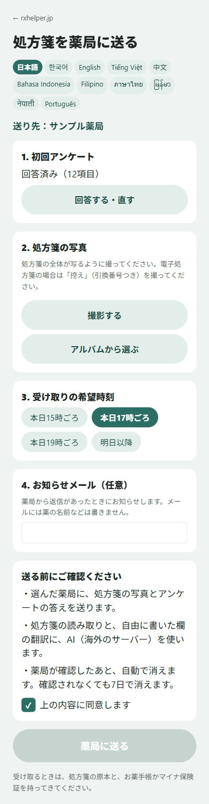
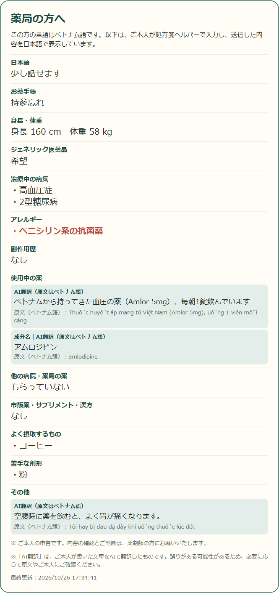
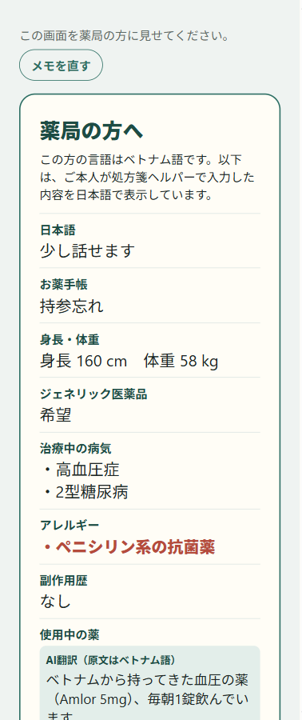

| A. 薬局のQRコードから送る（新しい使い方） | B. 「薬局で見せるメモ」を見せる（これまでの使い方） | |
|---|---|---|
| 始め方 | 窓口に置いたQRコードを、患者さんがスマートフォンで読み取る | 患者さんがアプリのトップから「薬局で見せるメモ」を開く |
| 薬局に届くもの | 送信される：処方箋の写真、初回アンケートの答え、受け取りの希望時刻 | 送信されない：データは患者さんのスマートフォンの中だけ |
| 薬局での見え方 | 受付用のパソコン・タブレットの「受信箱」に届く（30秒ごとに自動更新）。問診票（日本語）を表示・印刷できる | 窓口で、患者さんのスマートフォンの画面を見る |
| タイミング | 来局前。受け取りの希望時刻までに、在庫の確認や準備ができる | 来局したとき |
| 薬局からの連絡 | 「準備できました」「疑義照会中」「○時以降にご用意」や定型・自由入力のメッセージを、患者さんの言語で送れる | なし（口頭） |
| データの削除 | 薬局が「完了」を押した時点で削除。押さなくても送信から7日で自動削除 | 患者さんがメモを消すまで、スマートフォンに残る |


| 送信される | 送信されない |
|---|---|
|
|
 |
QRコードを使わずに、アプリの「薬局で見せるメモ」を開いた場合は、この画面を窓口でお見せいただく形です。どこにも送信されません。 表示される内容（問診票の形式）は A と同じなので、患者さんにとっては、来局前に送るか、来局してから見せるかの違いになります。 お気づきの点や、実際の窓口の流れに合わない点がありましたら、お知らせいただけますと幸いです。 |